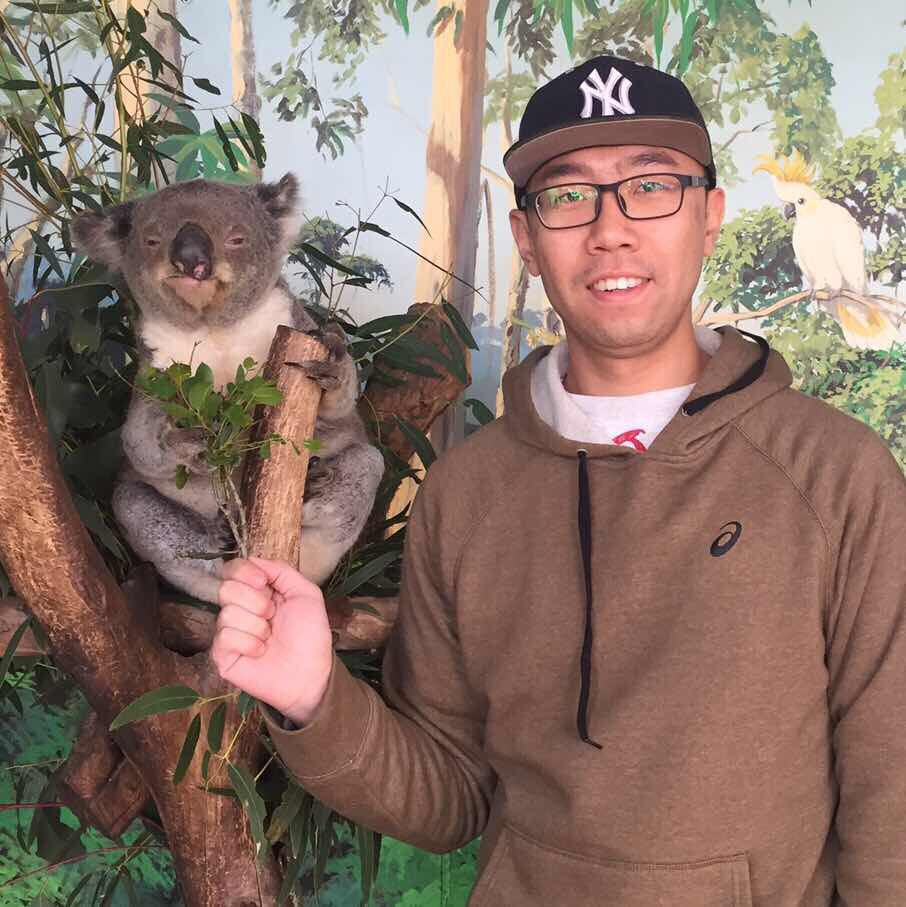

HONGFU LIU
Michtom School of Computer Science, Brandeis University hongfuliu@brandeis.edu
I am currently a tenure-track assistant professor in Michtom School of Computer Science at Brandeis University. I received my Ph.D. in Department of Electrical & Computer Engineering, Northeastern University (NEU), supervised by Prof. Yun (Raymond) Fu. Before joining NEU, I got my master and bachelor degrees majored in management at Beihang University with Prof. Junjie Wu. Here is my latest CV.
- EDUCATION
- PhD, in College of Engineering, Northeastern University, 2018
-
Master, in Management Science and Engineering, Beihang University, 2014
- Bachelor, in Information Systems, Beihang University, 2011
- Minor Bachelor, in Applied Mathematics, Beihang University, 2011
- Minor Bachelor, in Law, Beihang University, 2011
- INTERN
- Microsoft Research Asia, 06/2017 - 08/2017
- Adobe Research, 05/2016 - 07/2016
- INTERESTS
- Cluster Analysis: consensus clustering, constrained clustering, balanced clustering, multi-view clustering, interpretable clustering, big data clustering, fair clustering
- Outlier Detection: multi-view outlier detection, spammer detection, zombie user detection, bi-sampling outlier detection, jointly clustering and outlier detection
- Transfer Learning: heterogenous domain adaptation, unsupervised domain adaptation, structure-preserved domain adaptation
- Feature Selection: unsupervised feature selection, multi-view feature selection
- HIRING
- Ph.D. students, PostDocs, Visiting Scholars, and Research Associates to work on machine learning, data mining, computer vision, business intelligence, and social media analytics are welcome.
- INVITED TALKS
- I am inviting researchers from adademia and industry to Brandeis for talks.
- APPOITMENT
-
For
face-to-faceonline visitors, please make an appointment by email.
- NEWS
- 2021/9
- One IEEE TG paper accepted. Congrats to Han~
- 2021/8
- One CIKM short paper accepted. Congrats to Xiaoying~
- 2021/7
- One ICCV paper accepted. Congrats to Taotao~
- 2021/7
- I was promoted as an SPC of AAAI 2022.
- 2021/6
- I was promoted as an AC of ICLR 2022.
- 2021/6
- I was selected as a Scialog Fellow.
- 2021/6
- I was invited to serve on an NSF panel.
- 2021/6
- One TC paper accepted. Congrats to Kai~
- 2021/5
- Hanyu, an undergrad student from my group, received a SDE position from Salesforce. Congrats~
- 2021/5
- One KDD paper accepted. Congrats to Hanyu and Peizhao~
- 2021/4
- Hangyu, an undergrad student from my group, received a master offer from Brown Univeristy. Congrats~
- 2021/4
- Feng, an undergrad student from my group, received a master offer from Harvard Medical School. Congrats~
- 2021/3
- Sibo, a master student from my group, received a PhD offer from UToronto robotics group. Congrats~
- 2021/3
- Han got the Guardian (a 238-th company of Fortune Global 500) spring intership, 2021.
- 2021/3
- I was invited as a panelist for New England SACNAS Regional Conference.
- 2021/3
- One Patterns paper accepted, one subjournal under Cell. Congrats to Hangyu and Feng, two undergraduates at Brandeis.
- 2021/3
- DOE EERE program funded. With Prof. Abur and Prof. Lin. Thanks DOE.
- 2021/3
- One CVPR paper accepted. Congrats to Peizhao. The joint work with Adobe.
- 2021/2
- One NRI paper accepted. Congrats to Ethan, a summer intern from Wellesley High School.
- 2021/1
- One ICLR paper accepted. Congrats to Peizhao.
- 2021/1
- One RS paper accepted. Congrats to Prof. Wang.
- 2021/1
- Peizhao got the NEC spring internship and MERL summer internship, 2021.
Associate Editor
IEEE Computational Intelligence Magazine (IEEE CIM)
IEEE Computational Intelligence Magazine (IEEE CIM)
Editorial Board
Architecture and Design Review
Annals of Mathematics and Physics
Architecture and Design Review
Annals of Mathematics and Physics
Publicity Chair
International Workshop on Big Data Transfer Learning, 2017
International Workshop on Big Data Transfer Learning, 2017
Senior Program Committee
AAAI Conference on Artificial Intelligence (AAAI) 2019
AAAI Conference on Artificial Intelligence (AAAI) 2019
Program Committee
ACM International Conference on Multimedia (MM), 2019, 2020
Conference on Uncertainty in Artificial Intelligence (UAI), 2019
Neural Information Processing Systems (NeurIPS) 2018, 2019
SIGKDD Conference on Knowledge Discovery and Data Mining (KDD) 2019, 2020
International Joint Conference on Artificial Intelligence (IJCAI) 2016, 2017, 2019, 2020
IEEE International Conference on Machine Learning (ICML) 2019
IEEE Conference on Multimedia Information Processing and Retrieval (MIPR) 2019
IEEE International Conference on Data Mining (ICDM) 2018
IEEE International Conference on Big Data (IEEE Big Data) 2018, 2019
International Conference On Information Systems (ICIS) 2018
AAAI Conference on Artificial Intelligence (AAAI) 2017, 2018
International Conference on Machine Learning and Applications (ICMLA) 2016, 2017, 2018
ACM International Conference on Multimedia (MM), 2019, 2020
Conference on Uncertainty in Artificial Intelligence (UAI), 2019
Neural Information Processing Systems (NeurIPS) 2018, 2019
SIGKDD Conference on Knowledge Discovery and Data Mining (KDD) 2019, 2020
International Joint Conference on Artificial Intelligence (IJCAI) 2016, 2017, 2019, 2020
IEEE International Conference on Machine Learning (ICML) 2019
IEEE Conference on Multimedia Information Processing and Retrieval (MIPR) 2019
IEEE International Conference on Data Mining (ICDM) 2018
IEEE International Conference on Big Data (IEEE Big Data) 2018, 2019
International Conference On Information Systems (ICIS) 2018
AAAI Conference on Artificial Intelligence (AAAI) 2017, 2018
International Conference on Machine Learning and Applications (ICMLA) 2016, 2017, 2018
Journal Reviewer
IEEE Transactions on Pattern Analysis and Machine Intelligence (TPAMI)
IEEE Transactions on Knowledge and Data Engineering (TKDE)
IEEE Transactions on Neural Networks and Learning Systems (TNNLS)
IEEE Transactions on Image Processing (TIP)
IEEE Transactions on Biomedical Engineering (TBME)
IEEE Transactions on Cybernetics (TCYB)
IEEE Transactions on Big Data (TBD)
IEEE Computational Intelligence Magazine (CIM)
IEEE Transactions on Emerging Topics in Computational Intelligence (TETCI)
ACM Transactions on Knowledge Discovery from Data (TKDD)
Bioinformatics (BMC)
Information Science (IS)
Neural Networks (NN)
Applied Computing and Informatics (ACI)
Computer Methods and Programs in Biomedicine (CMPB)
Human-centric Computing and Information Sciences (HCIS)
Journal of Electronic Imaging (JEI)
International Journal on Artifcialcial Intelligence Tools (IJAIT)
Pattern Analysis and Applications (PAA)
Mathematical Problems in Engineering (MPE)
IEEE Transactions on Pattern Analysis and Machine Intelligence (TPAMI)
IEEE Transactions on Knowledge and Data Engineering (TKDE)
IEEE Transactions on Neural Networks and Learning Systems (TNNLS)
IEEE Transactions on Image Processing (TIP)
IEEE Transactions on Biomedical Engineering (TBME)
IEEE Transactions on Cybernetics (TCYB)
IEEE Transactions on Big Data (TBD)
IEEE Computational Intelligence Magazine (CIM)
IEEE Transactions on Emerging Topics in Computational Intelligence (TETCI)
ACM Transactions on Knowledge Discovery from Data (TKDD)
Bioinformatics (BMC)
Information Science (IS)
Neural Networks (NN)
Applied Computing and Informatics (ACI)
Computer Methods and Programs in Biomedicine (CMPB)
Human-centric Computing and Information Sciences (HCIS)
Journal of Electronic Imaging (JEI)
International Journal on Artifcialcial Intelligence Tools (IJAIT)
Pattern Analysis and Applications (PAA)
Mathematical Problems in Engineering (MPE)
Journal (2 TPAMI, 5 TKDE, 1 DMKD, 2 TKDD, 1 BMC, 1 TFS, 2 TIP, etc.)
Conference (4 KDD, 4 ICDM, 1 SDM, 1, ICLR, 3 CVPR, 1 ICCV, 5 IJCAI, 5 AAAI, 2 CIKM, etc.)
Google Scholar
Codes
Han Yue, Hongfu Liu and Jian Chen
A Gospel for MOBA Game: Ranking-Preserved Hero Change Prediction in Dota 2.IEEE Transactions on Games (TC), 2021.Kai Li, Hongfu Liu, Yulun Zhang, Kunpeng Li and Yun Fu
Self-guided Deep Multi-view Subspace Clustering via Consensus Affinity Regularization.IEEE Transactions on Cybernetics (TC), 2021.Hangyu Du, Feng Chen, Hongfu Liu and Pengyu Hong
Network-based Virus-Host Interaction Prediction with Application to SARS-CoV-2.Patterns, 2021.Xiaochen Lv, Wenhong Wang and Hongfu Liu
Cluster-Wise Weighted NMF for Hyperspectral Images Unmixing with Imbalanced Data.Remote Sensing (RS), 2021.Jun Li, Hongfu Liu, Zhiqiang Tao, Handong Zhao and Yun Fu
Learnable Subspace Clustering. IEEE Transactions on Neural Networks and Learning Systems (TNNLS), 2020.Wenhong Wang and Hongfu Liu
Deep Nonnegative Dictionary Factorization for Hyperspectral Unmixing. Remote Sensing (RS), 2020.Wenhong Wang, Yuntao Qian and Hongfu Liu
Multiple Clustering Guided Nonnegative Matrix Factorization for Hyperspectral Unmixing. IEEE Journal of Selected Topics in Applied Earth Observations and Remote Sensing (JSTARS), 2020.Xue Li, Hongfu Liu, and Bin Zhu
Evolutive Preference Analysis with Online Consumer Ratings. Information Sciences (IS), 2020.Hongfu Liu, Jun Li, Yue Wu and Yun Fu
Clustering with Outlier Removal. IEEE Transactions on Knowledge and Data Engineering (TKDE), 2019.Zhiqiang Tao, Hongfu Liu, Huazhu Fu and Yun Fu
Multi-View Saliency-Guided Clustering for Image Cosegmentation. IEEE Transactions on Image Processing (TIP), 2019.Weiren Yu, Zhengming Ding, Chunming Hu and Hongfu Liu
Knowledge ReusedOutlier Detection. IEEE Access, 2019.Zhiqiang Tao, Hongfu Liu, Sheng Li, Zhengming Ding and Yun Fu
Marginalized Multi-View Ensemble Clustering. IEEE Transactions on Neural Networks and Learn-ing Systems (TNNLS), 2019.Deqing Wang, Chenwei Lu, Junjie Wu, Hongfu Liu, Wenjie Zhang and Fuzhen Zhuang
Softly Associative Transfer Learning for Cross-domain Classification. IEEE Transactions on Cybernetics (TC), 2019.Hongfu Liu, Ming Shao and Yun Fu
Feature Selection with Unsupervised Consensus Guidance. IEEE Transactions on Knowledge and Data Engineering (TKDE), 2018.Zhiqiang Tao, Hongfu Liu, Sheng Li, Zhengming Ding and Yun Fu
Robust Spectral Ensemble Clustering via Rank Minimization. ACM Transactions on Knowledge Discovery from Data (TKDD), 2018.Yue Wu, Hongfu Liu, Jun Li and Yun Fu
Improving Face Representation Learning with Center Invariant Loss. Image and Vision Computing (IVC), 2018.Hongfu Liu, Ming Shao, Zhengming Ding and Yun Fu
Structure-Preserved Unsupervised Domain Adaptation. IEEE Transactions on Knowledge and Data Engineering (TKDE), 2018.Joseph Robinson, Ming Shao, Yue Wu, Hongfu Liu, Timothy Gillis and Yun Fu
Visual Kinship Recognition of Families in the Wild. IEEE Transactions on Pattern Analysis and Machine Intelligence (TPAMI), 2018.Hongfu Liu and Yun Fu
Consensus Guided Multi-View Clustering. ACM Transactions on Knowledge Discovery from Data (TKDD), 2018.Xue Li and Hongfu Liu
Greedy Optimization for K-means-based Consensus Clustering. Tsinghua Science and Technology (TST), 2018.Hongfu Liu, Zhiqiang Tao and Yun Fu
Partition Level Constrained Clustering. IEEE Transactions on Pattern Analysis and Machine Intelligence (TPAMI), 2017.Hongfu Liu, Ming Shao, Sheng Li and Yun Fu
Infinite Ensemble Clustering. Data Mining and Knowledge Discovery (DMKD), 2017.Hongfu Liu, Junjie Wu, Tongliang Liu, Dacheng Tao and Yun Fu
Spectral Ensemble Clustering via Weighted K-means: Theoretical and Practical Evidence. IEEE Transactions on Knowledge and Data Engineering (TKDE), 2017.Hongfu Liu, Rui Zhao, Hongsheng Fang, Feixiong Chen, Yun Fu and Yuyang Liu
Entrpoy-based Consensus Clustering for Patient Stratfcation. Bioinformatics (BIOINF), 2017.Handong Zhao, Hongfu Liu, Zhengming Ding and Yun Fu
Consensus Regularized Multi-View Outlier Detection. IEEE Transactions on Image Processing (TIP), 2017.Junjie Wu, Ziang Wu, Jie Cao, Hongfu Liu, Guoqing Chen and Yanchuan Zhang
Fuzzy Consensus Clustering with Applications on Big Data. IEEE Transactions on Fuzzy Systems (TFS), 2017.Junjie Wu, Hongfu Liu, Hui Xiong, Jie Cao and Jian Chen
K-means-based Con-sensus Clustering: A Unifeded View. IEEE Transactions on Knowledge and Data Engineering (TKDE), 2015.Junjie Wu, Shiwei Zhu, Hongfu Liu and Guoping Xia
Cosine Interesting Pattern Discovery. Information Sciences (IS), 2012.Xiaoying Xing, Hongfu Liu, Chen Chen and Jundong Li
Fairness-Aware Unsupervised Feature Selection. Conference on Information and Knowledge Management (CIKM), 2021.Taotao Jing, Hongfu Liu and Zhengming Ding
Towards Novel Target Discovery Through Open-Set Domain Adaptation. International Conference on Computer Vision (ICCV), 2021.Hanyu Du, Peizhao Li and Hongfu Liu
Deep Clustering-based Fair Outlier Detection. ACM SIGKDD International Conference on Knowledge Discovery and Data Mining (KDD), 2021.Peizhao Li, Jiuxiang Gu, Jason Kuen, Vlad Morariu, Handong Zhao, Rajiv Jain, Varun Manjunatha and Hongfu Liu
SelfDoc: Self-Supervised Document Representation Learning. IEEE Conference on Computer Vision and Pattern Recognition (CVPR), 2021.Ethan Xia, Han Yue and Hongfu Liu
On Dyadic Fairness: Exploring and Mitigating Bias in Graph Connections. International Conference on Learning Representations (ICLR), 2021.Peizhao Li, Han Zhao and Hongfu Liu
Tweet Sentiment Analysis of the 2020 U.S. President Election. 1st Workshop on News Recommendation and Intelligence (NRI), Co-located with The Web Conference, 2021.Peizhao Li, Han Zhao and Hongfu Liu
Deep Fair Clustering for Visual Learning. IEEE Conference on Computer Vision and Pattern Recognition (CVPR), 2020.Zhiqiang Tao, Hongfu Liu, Jun Li and Yun Fu
Adversarial Graph Embedding for Ensemble Clustering. International Joint Conference on Artifcialcial Intelligence (IJCAI), 2019.Zhengming Ding and Hongfu Liu
Marginalized Latent Semantic Encoder for Zero-Shot Learning. IEEE Conference on Computer Vision and Pattern Recognition (CVPR), 2019.Haitao Xiong, Hongfu Liu, Bineng Zhong and Yun Fu
Structured and Sparse Annotations for Image Emotion Distribution Learning. AAAI Conference on Artficial Intelligence (AAAI), 2019.Hongfu Liu, Ziming Huang, Yun Fu, Qi Chen, Mingqin Li, and Lintao Zhang
Fast Clustering with Flexible Balance Constraints. IEEE International Conference on Big Data (IEEE BigData), 2018.Jun Li, Hongfu Liu and Yun Fu
Predictive Coding Machine for Compressed Sensing and Image Denoising. AAAI Conference on Artficial Intelligence (AAAI), 2018.Yue Wu, Zhengming Ding, Hongfu Liu, Joseph Robinson and Yun Fu
Kinship Classification through Latent Adaptive Subspace. IEEE Conference on Automatic Face and Gesture Recognition (FG), 2018.Jun Li, Hongfu Liu, Handong Zhao and Yun Fu
Projective Low-rank Subspace Clustering via Learning Deep Encoder. International Joint Conference on Artifcialcial Intelligence (IJCAI), 2017.Zhiqiang Tao, Hongfu Liu, Sheng Li, Zhengming Ding and Yun Fu
From Ensemble Clustering to Multi-View Clustering. International Joint Conference on Artifcialcial Intelligence (IJCAI), 2017.Zhiqiang Tao*, Hongfu Liu*, Huazhu Fu and Yun Fu (* means equal contribution)
Image Cosegmentation via Saliency-Guided Constraint Clustering with Cosine Similarity. AAAI Conference on Artficial Intelligence (AAAI), 2017.Zhiqiang Tao, Hongfu Liu and Yun Fu
Simultaneous Clustering and Ensemble. AAAI Conference on Artficial Intelligence (AAAI), 2017.Sheng Li, Hongfu Liu, Zhiqiang Tao and Yun Fu
Multi-View Graph Learning with Adaptive Label Propagation. IEEE International Conference on Big Data (IEEE BigData), 2017.Yue Wu, Hongfu Liu, Yun Fu
Low-shot Face Recognition with Hybrid Classifiers. International Conference on Computer Vision Workshop (ICCV-W), 2017.Yue Wu, Hongfu Liu, Jun Li and Yun Fu
Deep Face Recognition with Center Invariant Loss. ACM Multimedia Thematic Workshop (MM-W), 2017.Hongfu Liu, Ming Shao, Sheng Li and Yun Fu
Inifnite Ensemble for Image Clustering. ACM SIGKDD international conference on Knowledge Discovery and Data mining (KDD), 2016.Hongfu Liu, Haiyi Mao and Yun Fu
Robust Multi-View Feature Selection. IEEE International Conference on Data Mining (ICDM), 2016.Hongfu Liu, Ming Shao and Yun Fu
Structure-Preserved Multi-Source Domain Adaptation. IEEE International Conference on Data Mining (ICDM), 2016.Hongfu Liu, Yuchao Zhang, Bo Deng and Yun Fu
Bi-sampling Ensemble Outlier Detection. IEEE International Conference on Big Data (IEEE BigData), 2016.Zhiqiang Tao, Hongfu Liu, Sheng Li and Yun Fu
Robust Spectral Ensemble Clustering. ACM International Conference on Information and Knowledge Management (CIKM), 2016.Handong Zhao, Hongfu Liu and Yun Fu
Incomplete Multi-modal Visual Data Grouping. International Joint Conference on Artifcialcial Intelligence (IJCAI), 2016.Hongfu Liu, Ming Shao and Yun Fu
Consensus Guided Unsupervised Feature Selection. AAAI Conference on Artficial Intelligence (AAAI), 2016.Hongfu Liu*, Tongliang Liu*, JunjieWu, Dacheng Tao and Yun Fu (* means equal contribution)
Spectral Ensemble Clustering. ACM SIGKDD international conference on Knowledge Discovery and Data mining (KDD), 2015.Hongfu Liu and Yun Fu
Clustering with Partition Level Side Information. IEEE International Conference on Data Mining (ICDM), 2015.Hongfu Liu, JunjieWu, Dacheng Tao, Yuchao Zhang and Yun Fu
DIAS: A Disassemble-Assemble Framework for Highly Sparse Text Clustering. SIAM International Conference on Data Mining (SDM), 2015.Hongfu Liu, Cheng Gong and Junjie Wu
Consensus Clustering on Big Data. IEEE International Conference on Service Systems and Service Management (ICSSSM Best Paper), 2015.Hongfu Liu,Yuchao Zhang,Hao Lin and Junjie Wu
How Many Zombies Around You. IEEE International Conference on Data Mining (ICDM), 2013.Junjie Wu, Hongfu Liu, Hui Xiong and Jie Cao
Theoretic Framework of K-means-based Consensus Clustering. International Joint Conference on Artifcialcial Intelligence (IJCAI), 2013.Yaqiong Wang, Hongfu Liu, Hao Lin, Junjie Wu, Zhiang Wu and Jie Cao
SEA: A System for Event Analysis on Chinese Tweets. ACM SIGKDD international conference on Knowledge Discovery and Data mining (KDD), 2013.Yuchao Zhang and Hongfu Liu
A Reliable QoE-aware Framework for Cloud Service Monitoring and Ranking. International Conference on Electrical and Information Technologies for Rail Transportation (EITRT), 2013.Yuchao Zhang, Hongfu Liu and Bo Deng
SLA-Driven State Monitoring for Cloud Services. IEEE International Conference on High Performance Computing and Communications (HPCC), 2013.
Alumni
Hangyu Du 3/2020-5/2021 (Brown, Master)
Feng Chen 3/2020-5/2021 (Harvard Medical School, Master)
Hanyu Song 9/2020-5/2021 (Salesforce)
Ethan Xia 6/2020-2/2021
Elizabeth Fong 9/2020-12/2020
Kun Li 9/2018-6/2020
Zihao Wang 9/2019-6/2020
Sibo Zhu 9/2018-12/2019 (Univeristy of Toronto, PhD)
Runjie Lu 9/2018-6/2019 (Wayfair)
Hongwen Wang 3/2019-2/2020
Yufan Song 7/2019-2/2020 (CMU, Master)
Chenning Yu 7/2019-12/2019 (UCSD, PhD)
Haochen Wang 7/2019-8/2019
Yanjing Li 7/2019-8/2019
Hangyu Du 3/2020-5/2021 (Brown, Master)
Feng Chen 3/2020-5/2021 (Harvard Medical School, Master)
Hanyu Song 9/2020-5/2021 (Salesforce)
Ethan Xia 6/2020-2/2021
Elizabeth Fong 9/2020-12/2020
Kun Li 9/2018-6/2020
Zihao Wang 9/2019-6/2020
Sibo Zhu 9/2018-12/2019 (Univeristy of Toronto, PhD)
Runjie Lu 9/2018-6/2019 (Wayfair)
Hongwen Wang 3/2019-2/2020
Yufan Song 7/2019-2/2020 (CMU, Master)
Chenning Yu 7/2019-12/2019 (UCSD, PhD)
Haochen Wang 7/2019-8/2019
Yanjing Li 7/2019-8/2019

Powered by Leo